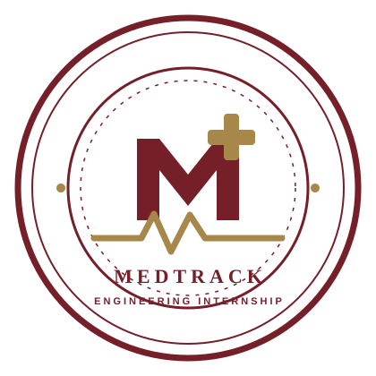

مبانی برنامهنویسی و Java 21
برنامهنویسی چیست، کد چگونه اجرا میشود، متغیرها و انواع داده، شرطها، حلقهها، متدها، آرایهها، رشتهها، حافظه، تفکر الگوریتمی و عیبیابی ابتدایی.
VariablesConditionsLoopsMethods
کارآموزی پروژهمحور توسعه نرمافزار
برای ورود به دنیای برنامهنویسی لازم نیست مهندسی کامپیوتر خوانده باشی یا از قبل کدنویسی بلد باشی. در مسیر مدترک، مفاهیم را از پایه یاد میگیری و قدمبهقدم با جاوا و اسپرینگ بوت بکاند یک سامانه مدیریت نسخه پزشکی را میسازی.
از یک مسئله واقعی شروع میکنیم و به یک سیستم نرمافزاری میرسیم.
MedTrack یک پروژه آموزشی در حوزه سلامت است که برای مدیریت دیجیتال نسخههای پزشکی طراحی میشود. پزشک نسخه ثبت میکند، بیمار اطلاعات نسخه خود را میبیند و داروخانه فرایند بررسی و تحویل دارو را مدیریت میکند.
ما قرار نیست یک پروژه از قبل آماده را کپی کنیم. نیازمندیها را بررسی میکنیم، ساختار پایگاه داده را طراحی میکنیم، ارتباط بخشهای مختلف را میسازیم، خطاها را مدیریت میکنیم و برای قابلیتها تست مینویسیم.
در این مسیر یاد میگیری که پشت یک قابلیت ساده، چه تصمیمهای فنی و چه منطق برنامهنویسی وجود دارد.
فرقی نمیکند دانشجو باشی، فارغالتحصیل شده باشی، شاغل باشی یا بخواهی وارد یک حوزه کاری جدید شوی. نیازی به مدرک دانشگاهی مرتبط یا تجربه قبلی برنامهنویسی نداری.
از ابتداییترین مفاهیم شروع میکنیم، همه چیز را مرحلهبهمرحله توضیح میدهیم و با تمرینهای پیوسته به سراغ موضوعات پیشرفتهتر میرویم. چیزی که نیاز داری علاقه، پشتکار، تمرین و آمادگی برای حل مسئله است.
از منطق برنامهنویسی تا طراحی، توسعه و تست یک سرویس بکاند.
برنامهنویسی چیست، کد چگونه اجرا میشود، متغیرها و انواع داده، شرطها، حلقهها، متدها، آرایهها، رشتهها، حافظه، تفکر الگوریتمی و عیبیابی ابتدایی.
کلاس، شیء، سازنده، کپسولهسازی، وراثت، چندریختی، اینترفیس، کلاس انتزاعی، مدیریت استثناها، مجموعهها، جنریکها، رکوردها و طراحی کد خوانا.
کلاینت و سرور، درخواست و پاسخ، HTTP، متدهای وب، کدهای وضعیت، JSON، API و اصول معماری REST؛ تا بدانی یک برنامه تحت وب دقیقاً چگونه کار میکند.
ایجاد پروژه، مدیریت وابستگیها، تزریق وابستگی، معماری لایهای، کنترلر، سرویس، اعتبارسنجی ورودی، مدیریت خطا، DTO و طراحی رابطهای برنامهنویسی.
جدول و رابطه، کلید اصلی و خارجی، خواندن و نوشتن داده، JOIN، طراحی طرحواره، JPA و Hibernate، و ذخیره اطلاعات بیمار، پزشک، دارو و نسخه.
تحلیل تسکهای پروژه، طراحی موجودیتها، ثبت و مشاهده نسخه، مدیریت کاربران و داروها، وضعیت نسخه، موجودی داروخانه و پیادهسازی منطق تجاری.
آشنایی با احراز هویت، مجوز دسترسی، نقشهای مختلف، محافظت از endpointها، اصول نگهداری امن رمز عبور و جلوگیری از دسترسی غیرمجاز.
تست واحد و یکپارچه، تست شرایط خطا، شبیهسازی وابستگیها، JUnit، Mockito، پیدا کردن ریشه مشکلات و بهبود ساختار کد.
مخزن کد، branch، commit، merge، pull request، code review، رفع تداخل تغییرات و کار روی تسکها با روشهای رایج در تیمهای نرمافزاری.
مستندسازی API، کار با Postman و OpenAPI، آشنایی با Docker، تنظیمات اجرا، ثبت خطاها و آمادهسازی پروژه برای ارائه و توضیح در مصاحبه فنی.
یاد میگیری مسئله را تحلیل کنی، راهحل خودت را طراحی کنی، اشتباهاتت را پیدا کنی و دلیل تصمیمهای فنیات را توضیح بدهی. ابزارهای هوش مصنوعی کمککنندهاند، اما جای تفکر مستقل و درک کد را نمیگیرند.
نیازمندی را میخوانیم، سؤال میپرسیم و بخشهای مسئله را مشخص میکنیم.
مدل داده، جریان درخواست و مسئولیت هر بخش را طراحی میکنیم.
کد مینویسیم، خطاها را پیدا میکنیم و رفتار برنامه را میسنجیم.
تغییرات را در گیت ثبت میکنیم و از بازخورد بررسی کد یاد میگیریم.
میزان دستیابی به مهارتها به تمرین و مشارکت هر فرد بستگی دارد. هدف، تقویت آمادگی برای فرصتهای سطح جونیور است؛ نه تضمین استخدام.

پس از تکمیل موفق الزامات آموزشی و پروژهای، گواهی پایان کارآموزی آکادمی کدراه صادر میشود. لینک اختصاصی گواهی را میتوان در رزومه یا پروفایل حرفهای قرار داد تا امکان بررسی آنلاین آن وجود داشته باشد.
مشاهده نمونه گواهی ↗گواهی آکادمی معادل مدرک دانشگاهی نیست و استخدام را تضمین نمیکند.خیر. آموزش از پایه شروع میشود و هیچ دانش قبلی برنامهنویسی برای آغاز لازم نیست.
خیر. از هر رشته و پیشینه تحصیلی یا شغلی میتوانی شروع کنی؛ مدرک مرتبط شرط ورود نیست.
بله. MedTrack پروژه محوری مسیر است. یک سامانه آموزشی با سناریوهای واقعی مدیریت نسخه پزشکی میسازیم؛ نه یک سامانه عملیاتی پزشکی.
خیر. علاوه بر جاوا، اسپرینگ بوت، پایگاه داده، API، تست، امنیت، مدیریت نسخه و روش کار تیمی را یاد میگیری.
تضمین استخدام وجود ندارد. هدف آمادهتر شدن برای ورود به بازار کار از طریق تقویت پایه علمی، تمرین و تجربه پروژه است.
بله. گواهی افراد واجد شرایط از طریق لینک اختصاصی در وبسایت آکادمی قابل بررسی خواهد بود.
برای نصب ابزارهای توسعه، تمرین و انجام بخشهای پروژه باید به یک کامپیوتر مناسب دسترسی داشته باشی.
اگر آماده یادگیری، تمرین و ساختن هستی، مسیر مدترک برای همین شروع طراحی شده است.
آشنایی بیشتر با آکادمی کدراه ←